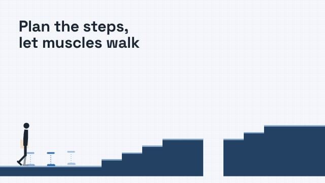
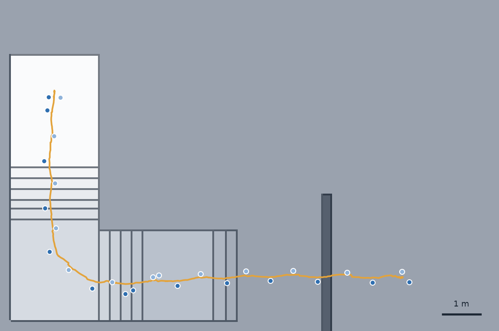

gait_planner · plan · updated 15 Nov 2026
Sparse-target planner
A planner says where and when each foot lands, where the body's centre of mass should be, and which way the pelvis faces. A muscle policy works out the rest. A style prior and six checks against human data decide which new episodes are kept, so new skills come out of the loop instead of from new recordings.
At a glance

Planner
Given the ground ahead and a goal, it proposes footholds, when each foot is down, a band for the centre of mass and the pelvis orientation. It is learned from the start, as in PARC.
Muscle policy
Drives 90 muscles at 40 Hz in our GPU simulator to follow the plan. Joint angles are left free; nothing tells it the full pose.
Gatekeepers
A style prior scores how human the motion looks. Six checks compare forces, loads and effort with human data. Only episodes that pass become new training data.
What a plan looks like
Feet get a place and a time. The body gets a band, and the pelvis an orientation, which fixes where the hips are. The joints are free. Overlapping foot intervals mean walking, and a gap between them means flight, so the plan sets the gait without dictating the swing.
The policy sees its own body, a 17 × 3 height scan of the ground ahead and the next second of the plan. It is rewarded for contacts (0.15), footholds within 10 cm (0.15), staying in the band (0.10), keeping the pelvis within 6° of its planned orientation (0.10) and the style score (0.50), minus muscle effort.
How training works
First every part learns from real motion. Then the loop grows the data: new ground, new plans, and only the episodes that pass the gatekeeper are kept.
Phase 1 · training now
Learn from real motion
The muscle policy follows plans copied from real clips, so a failure is the policy's, not the planner's. A full-pose tracker on the same clips, for the same hours and side by side on the same GPU, is the baseline. Both have been training since 15 Nov, 18:49.
Phase 3 · each round · parts built
The loop
New ground gets a little harder each round. Only episodes that pass the gatekeeper join the planner's data, next to the real clips, and the planner and policy retrain on all of it. Built: the course generator, the planner, episodes on generated ground. Being tested: the gatekeeper's new parts. Not built: the code that runs the rounds.
The prior grows conservatively: every batch is at least three-quarters real clips; a kept window joins only if the last prior already scores it as human; the first prior stays frozen as a guard, and a round is undone if its scores on known ground drop.
The planner on generated ground
The course generator joins flights, landing turns, ramps, gaps and platforms, harder as one difficulty setting rises. The planner, trained on the real clips' plans, plans across a course from a standing start.

Seen from above, lighter is higher. Start at top left: down a flight, a landing turn, two more flights, a gap, then stop. Footholds: left light blue, right dark blue; amber is the centre of mass.
- Reads
- the ground 3.6 m ahead and 1.6 m across, and a goal
- Writes
- the next 1.2 s of plan, pelvis orientation included; keeps 0.5 s, then plans again
- Courses finished
- 12 of 12
- Footholds on the course
- 99.6 %
- Across a stair edge
- 8 % (it often skips a tread)
- Held-out clips
- next touchdown 0.05 s and 11 cm off; pelvis orientation 4° off 0.6 s ahead (medians)
These numbers come from a small model (2 layers instead of 4, 6k iterations instead of 200k, one minute on the GPU), a check that the pieces fit. The full model is the real run. Stairs are weak because they are half a minute of the data; the loop is meant to fix that.
The six checks
An episode that falls is dropped first. Then it must pass all six. Each limit is the 5th or 95th percentile of the same measure on real clips.
Looks human
Style score over 2 s windows.
vs real clips, same terrainFollows the plan
Contacts at the planned times, feet on the footholds, centre of mass in its band.
vs the planGround force
Peak force and loading rate; running limits rise with speed.
vs Camargo walking, AB01 runningJoint loads
Peak net moments at hip, knee and ankle.
vs Camargo walking, AB01 runningMuscle effort
No muscle held at 95 % for more than a tenth of any second.
saturation limitClean contact
No sliding feet, no joints driven into their limits.
sliding and limit hitsBeing tested for the loop: the looks-human limit judged against real motion with similar plans (not one limit per terrain), and kinematic checks for knee bend (a stiff knee, a crouch) and planted feet sliding. On held-out clips with deliberately broken copies, together they catch nearly every bad copy; they still reject too much real running and ramp walking, which the next round of tests addresses.
Camargo 2021 (22 subjects; inverse dynamics redone on our body, matching their own at r 0.88–0.997) is the human reference for forces, moments and EMG. It is all walking, so running takes its limits from AB01's 2.5 minutes of treadmill running on force plates (inverse dynamics on the same body; the plates' 14 ms lag behind the cameras corrected). AB01 ran at 2.0–2.7 m/s and PARC at 3.4 m/s typically, so the running limits rise with the target speed, following AB01's own trend plus a margin that widens the further they extrapolate, up to 4.5 m/s. Jumps, drops and platforms still skip checks 3 and 4.
Running it after training
Only the planner and the muscle policy are needed. The prior, the checks and the human reference ranges stay behind.
What it starts from
498 clips, 64 minutes, retargeted onto one body. AB01 is our pilot subject on treadmill and overground; PARC is published motion capture of running, platforms, gaps and a few stairs.
Minutes of training data by skill
Stairs are the thinnest skill: half a minute. Scherpereel 2023 stair data comes next. Held out: 70 clips (10 min) of unseen trials and 22 clips (3 min) of the steepest ramps, ±15°. Five hand-assisted climbs and one clip whose toe passes through a platform were dropped.

One body for everything
- Model
- Rajagopal v3, no arms
- Joints
- 23 degrees of freedom
- Muscles
- 90
- Contact
- 18 heel and toe spheres
- Mass
- 75.3 kg
The clips, the policy and the reference ranges all use this model.
Roadmap and gates
Each phase ends at a gate. Phase 1 decides whether sparse targets can match full-pose tracking at all.
0 · Data
Dataset, plans, references, filter limits, tests, an end-to-end trial of every step.
1 · Feasibility
Level and ramps: sparse plan + style vs full-pose tracking.
2 · Stairs
Footholds on treads, up and down.
3 · Planner loop
Learned planner on generated ground, PARC-style rounds. Generator, planner and clip-free episodes are built; the rounds are next.
4 · Evaluation
Held-out terrain, human kinetics and EMG, changed dynamics.
What we can claim
The style prior makes the kinematics human by construction, so claims rest on forces, muscles and responses to change.
New ground
Stair heights and ramp grades outside the training set.
Human kinetics and EMG
Forces, joint moments and muscle on/off timing against Camargo's 22 subjects (EMG ceiling r 0.87–0.92).
Changed dynamics
Added load, ankle weakness and exo assistance, against published human responses.
Fair baseline
Full-pose tracking on the same clips and body, with the same training time.
Details
Run order (your GPU runs)
| Step | Command | Gives | Time (idle 4090) |
|---|---|---|---|
| 1 | train_prior.py --out runs/prior_v1 | the style prior (200k iterations) | ~22 min |
| 2 | check_prior.py runs/prior_v1/prior.pt, then python -m gp.accept --prior … | gate G0 (must pass); the style limit for check 1 | minutes |
| 3 | train.py --task baseline and --task planner, equal --hours, side by side | the two Phase 1 policies | your hours |
| 4 | evaluate.py, then g1.py and emg_report.py | gate G1 and EMG timing | under an hour |
| 5 | train_planner.py --out runs/planner_net_v1, then check_planner.py runs/planner_net_v1/planner.pt | the planner network (200k iterations) and its score before physics | ~3.4 h alone |
Every step has been run end to end with tiny settings, and 16 tests pass. In the code, --task planner trains the muscle policy on plans copied from clips; the planner network trains on its own (step 5) and drives the policy once the loop runs.
Settings
- Control at 40 Hz with 75 physics steps each (3 kHz), implicit contact, human motor delays.
- Style prior: 13-frame windows (0.325 s), scored every step; half of each batch mirrored left to right; 200k iterations.
- Muscle effort is metabolic, at Rajagopal's own 0.6 MPa specific tension (the default 0.25 MPa made muscles 2.4× too heavy).
- A fall: pelvis more than 0.3 m from the clip's, or tilted over 60°, for 3 steps. On generated ground there is no clip: the centre of mass more than 0.5 m from the plan's, or the tilt.
- Planner: a diffusion model over plan frames at 20 Hz (0.4 s given, 1.2 s generated), reading the ground on a 0.1 m grid ahead and a goal; 4 layers × 256; half of each batch mirrored; 200k iterations.
- Generated courses: every part runs along the grid so walls stay straight; turns are 90° on a square landing; turning stairs are a flight, a landing turn and a flight.
- The critic also sees the full reference pose; the policy never does.
Risks and what we do about them
| Risk | Response |
|---|---|
| Sparse targets allow a crouch, stiff knee or shuffle (acceptance under 20 %) | Raise the style weight; add a coarse pelvis target; curriculum from full pose to sparse |
| The prior penalises the armless body | Train the prior on armless clips only |
| Style reward too slow (under 10k steps/s) | Score every few steps, or distil it into a small network |
| The loop narrows to easy plans | Sample plans by coverage; make coverage a gate |
| Limits too strict on rare terrain | Per-class limits; the 2nd percentile where real data is thin |
| Terrain errors in the clips leak into plans | Plans only from clips that pass the seed library's checks |
| The growing prior drifts away from human motion | Three-quarters real per batch; only already-accepted windows join; frozen first prior with rollback |
| Style rests on two people | Add Scherpereel 2023's subjects; G0 checks each subject |
| Clips carry small contact errors (our toes reach past PARC's foot) | All PARC clips scanned; the worst six dropped; the rest are a few cm for a fraction of a second |
| The planner skips stair treads (half a minute of stair data) | The planner check counts footholds across an edge; stairs grow through the loop and Scherpereel 2023 |
Decisions and open question
| Date | Decision |
|---|---|
| 15 Nov | The plan includes the pelvis orientation (6° band, weight 0.10, the centre-of-mass band's weight halved to 0.10): with the footholds it pins the hips, leaving each leg little more than the knee's swivel and the ankle. |
| 15 Nov | Running limits come from AB01's treadmill running and rise with target speed to 4.5 m/s. |
| 15 Nov | The planner is a diffusion model over the plan (not the pose), reading the ground ahead and a goal. |
| 15 Nov | Generated courses run along the grid; winding stairs dropped (their walls come out jagged on square cells); PARC-style turning stairs added. |
| 15 Nov | Dropped the 5 hand-assisted climbs and one toe-through-platform clip from PARC. |
| 15 Nov | The planner is learned from the start, as PARC's generator is. |
| 15 Nov | Seed is AB01 + PARC (no new recordings per skill); Camargo stays the reference; the prior grows slowly. |
| 14 Nov | Policy at 40 Hz; prior windows of 13 frames scored every step. |
| 14 Nov | Muscle effort is metabolic at 0.6 MPa. |
| 14 Nov | A separate track from the tiered controller, run first. |
Open: which held-out human data serves the changed-dynamics tests (load carriage, ankle weakness, exo)?
Open: winding stairs. Clean ones need rotated boxes (exact, but the same staircase in every world) or a small SPRINT change letting a ground cell hold an angled wall.
References
- SMP (Mu et al.): a frozen diffusion prior used as a reward.
- PARC (Xu et al., SIGGRAPH 2025): generator and tracker trained together, with physics-corrected data added each round.
- MaskedMimic (Tessler et al., SIGGRAPH Asia 2024): one controller from partial targets, learned from full motion capture.
- Seed library:
~/Jinwoo/seed_library, the source of the clips and their terrain.